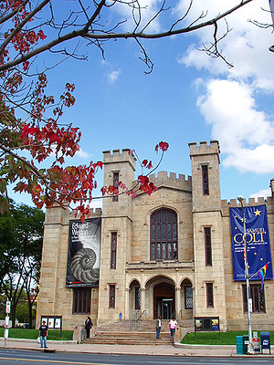
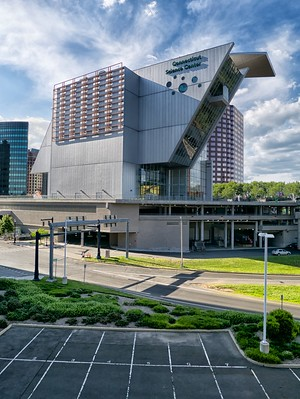
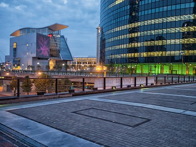

Museums
There are numerous museums in Hartford. I've selected the two most popular ones in the list below.
- The Wadsworth Atheneum (art)
- The Connecticut Science Center (science)
The Wadsworth Antheneum
The Wadsworth is a beautiful museum. It is the oldest art museum in the country!
A visit is
a typical class field trip, though it is enjoyable anytime.

The Connecticut Science Center
This is an extensive science center where exhibits are constantly changing.
The building is also the most futuristic and unique one among the Hartford skyline.
In the second picture, the building is the one with the wavy roof.

